Here, we will show you how to register a Twilio account.
Note 1: This is part of LinkIt ONE Twilio SMS Demo.
Note 2: You can click on the image to enlarge it.
Note 3: The webpage of Twilio will have some difference for different resolution and operating system. So the below image is just for your reference.
Click to open the page of Twilio.
Click on Sign up, and fill some information:
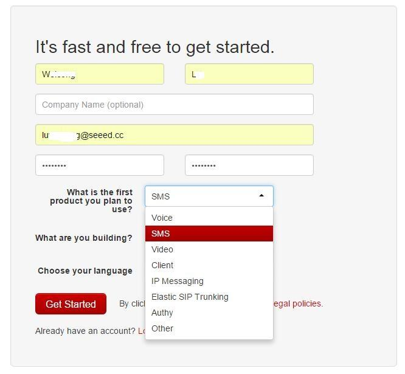
Click on Get Started to go ahead.
Then, you need to verify your phone number. Please choose your country and phone number, and Click on Text me.
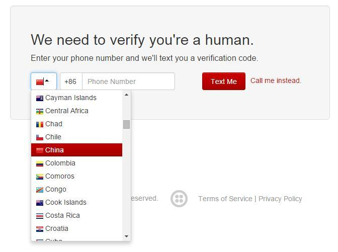
You will get a SMS from Twilio. Type the code you got, and click Submit.
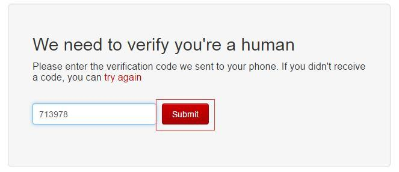
Then, you will get the below page, Click on Create a Messaging Service
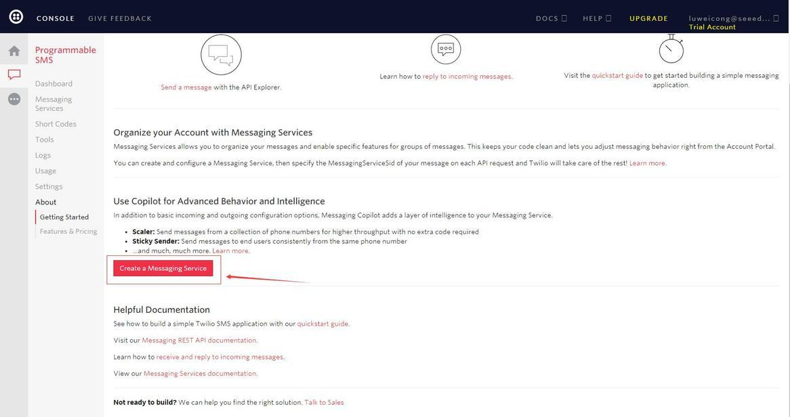
Input a name, whatever you like, and then click Create
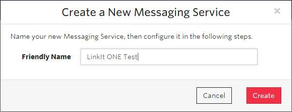
Then, we need to do some Configuration. Select Process Inbound Messages, leave the others as default and Save it.
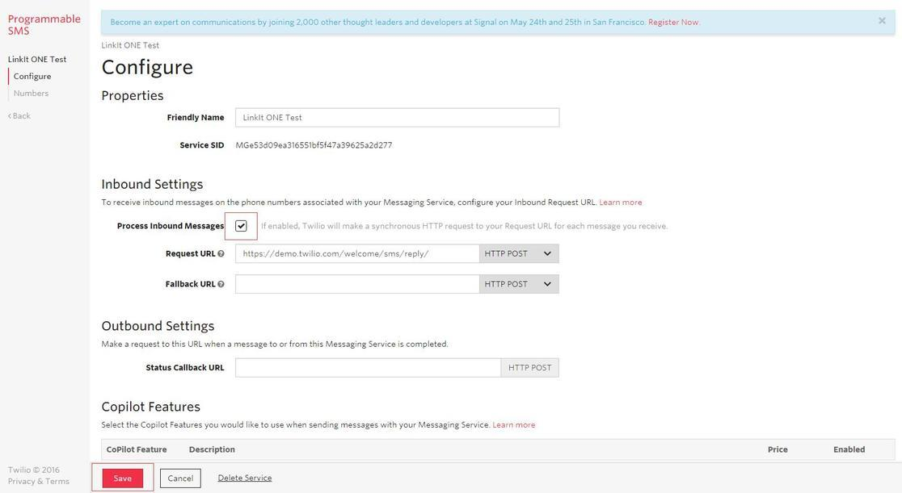
We need to buy a number and it's free for the first time. So, you don't need to pay a cent here.
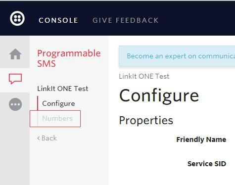
Click on Buy a Number
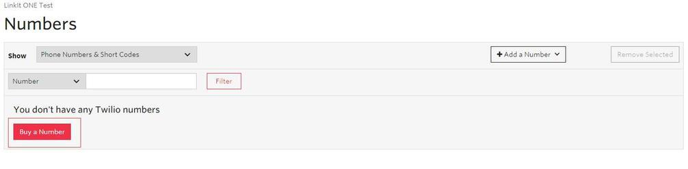
Select your Country and Search
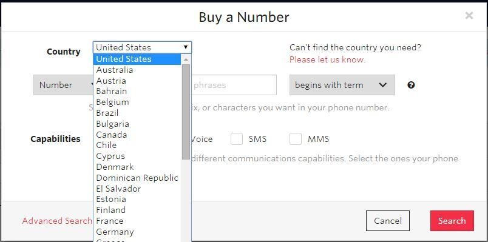
You will get a list of number, choose one you like and click Buy
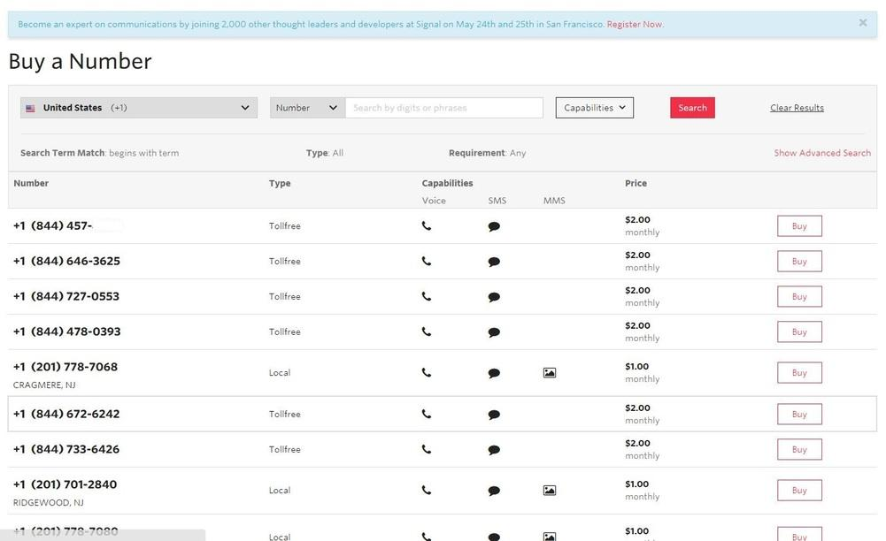
Buy This Number
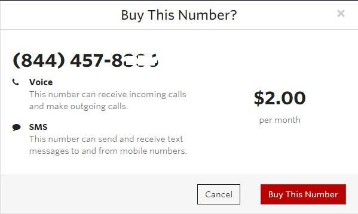
Please copy this number to a blank text file. We will need it later.
Finally, go to Home, and copy Account SID and Auth Token to the blank text file we had mentioned above. We will need it later.
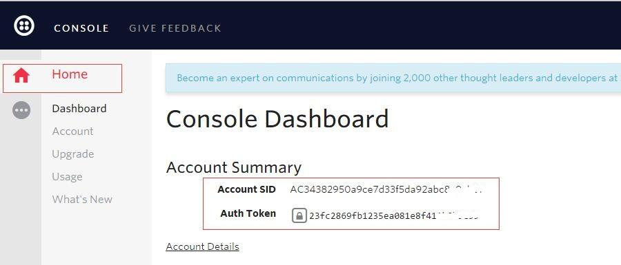
Copyright (c) 2008-2016 Seeed Development Limited (www.seeedstudio.com / www.seeed.cc)